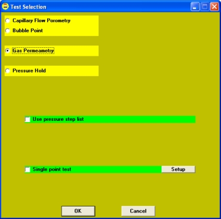

With Capwin, you have the option of running a "single-pressure" gas permeability test. This test records and averages flow and pressure data for a specified period of time at a single pressure.
To use this test, first set up the test parameters:
1. Go to the Preferences window (from the Modify) menu. Click the Gas Perm. Tab:
2. Enter the desired values.
3. Click Save to record your changes.
Then set up a gas permeability test to run in single-point mode using the following steps:
1. Go to the Autotest setup window. If you do not see the Test Type parameter line, go into Supervisor mode or click Show Advanced Settings.
2. Click on the white line specifying the Test Type. The Test Selection window will open.
3. Select the Gas Permeametry test option.
Check the box next to the Single Point Test option. (Clicking the Setup button will take you back to the preferences window.)
4. The next time you run a gas permeability test, the test will run in single-point mode using the parameters specified in the Preferences setup.
| Back | Next |